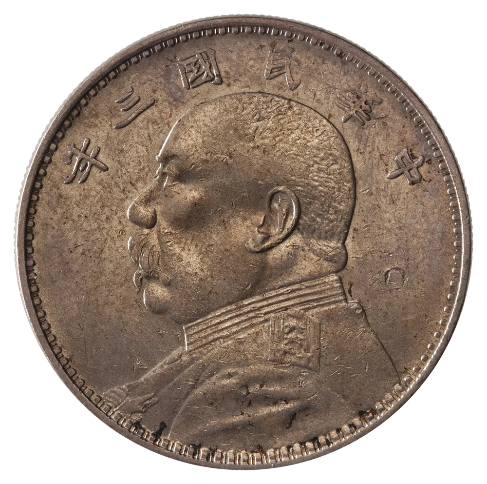

影像先行
先把它拍好、裱好、放正。我们相信，认真观看是理解一件旧物的开始。
老钱 · 中国钱币与老纸币影像与回收参考
参考行情更新于 照片仅在本机处理
中国钱币 · 影像与行情EST. 2026
上传一枚旧钱或一张老纸币，让它以拍卖图录的方式重新被端详；也查一查它今天的市场回收参考价。旧物的分量，值得被认真看见。

正 / 面库平七钱二分 · 天津造币总厂
影像装裱 THE ATELIER
老钱以拍卖图录的标准，为每一枚旧钱匹配画框、卡纸、留白与展签。上传后系统自动识别主体、清理背景，并给出适配的装裱比例。
钱币不会说话。
但它的包浆、磨损与边齿，记得每一次转手。
我们相信，一枚旧钱的价值不只在成交价里，也在它被端详时的那一束光里。
开始你的第一张展签 BEGIN YOUR ARCHIVE
选一张清晰的藏品正面照，我们会自动完成裁切、配框与展签排版。整个过程只在你的浏览器里发生。
自然光下平放拍摄，正面朝上，避免反光与手指入镜。
钱币或纸钞都可以，自动进入装裱工坊
JPG · PNG · WEBP 建议 1:1 正视图泉藏图录 CATALOGUE RAISONNÉ
一页一币，记录版别、品相与当期参考区间。从民国银元到新中国硬币，再到各套老纸币，这里既是藏品档案，也是为你的旧钱寻找装裱语境的起点。
回收行情 REFERENCE MARKET
老钱按常见版别与品相，整理硬币与老纸币的近期公开成交样本，形成可供参考的回收区间。它可以作为起点，但不替代专业评级与实物鉴定。
机制银币 · 铜元 · 古钱
按普通美品单件换算
随公开成交样本调整
版别参考价 PRICE SHEET
没有匹配的版别，试试其他关键词。
* 以上区间按“普通版 · 美品”口径整理，特殊版别、评级币与瑕疵品差异较大。行情为演示数据，仅供参考。
样本走势 30 DAYS
以 2026 年 9 月中旬为基期，综合本期 14 个版别的参考中位价编制。曲线用于展示产品形态，非真实指数。
同一版别从通货到未流通，价格可相差数倍。字口、边齿、包浆与是否有修补，都会影响回收区间。
同一年份往往存在多个铸局与版式。细微的星点、字体和嘉禾排列，都可能带来明显价差。
光线与角度会改变照片判断。高价值藏品建议保留原始状态，交由专业评级或线下鉴定复核。
本原型页面使用结构化的演示样本数据，综合常见公开成交区间整理，用于呈现产品交互与版式。真实上线时，应接入可追溯的成交数据源，并标注采价日期、样本量与品相口径。
旧钱与老纸币不是标准化商品。真伪、版别稀缺度、品相评分、包浆状态、是否有修补，以及买卖双方议价都会造成差异。页面仅给出常见品相下的参考区间。
装裱工坊 THE ATELIER
一张清晰的藏品照片，一套讲究的装裱。上传后自动完成主体识别、背景清理与比例适配，再填写属于它的展签。
正面清晰照即可，系统会自动识别币缘或票面。
硬币或纸钞正放拍摄，光线均匀，背景越简洁越好
JPG / PNG / WebP · 最大 20MB智能抠圆已完成 · 已匹配典藏装裱
正在识别画幅并清理背景…
照片不会离开你的浏览器，刷新或关闭页面即不再保留。
这些文字会出现在展签和导出图片上。
三种气质，适配不同类型的旧钱。
自动排版 · 可随时修改 · 生成后可下载高清 PNG
民国三年 · 1914 | 极美 | 嘉禾纹 · 原味包浆
下载尺寸 1600 × 2000 px · 仅用于个人收藏与展示，请勿用于伪造鉴定或交易文件。
关于老钱 ABOUT LAO QIAN
老钱是一间以中国钱币与老纸币为主角的影像工作室，也是一份仍在生长的泉藏档案。我们关心旧物的价格，也关心它被看见的方式。
很多旧钱被放在抽屉深处，用一张纸巾包着，或混在一堆杂物里。它们可能并不昂贵，却真实地参与过一个家庭的生活，见证过一次交易、一段迁徙、一个时代里普通人的日常。
老钱想做的，是给这些旧物一次体面的出场：用接近拍卖图录的影像语言，为它们配框、打光、写下展签；同时提供克制的市场参考，让“它值多少钱”不再是一句空泛的好奇。
先把它拍好、裱好、放正。我们相信，认真观看是理解一件旧物的开始。
参考公开成交样本，标注品相与口径。不夸大，不制造一夜暴富的想象。
照片在浏览器本地处理，展柜也只保存在你的设备里。我们不需要拥有你的藏品。
一份说明 COLOPHON
这是一个以产品设计为目标的概念站点，使用结构化的演示行情与公开馆藏影像，呈现中国硬币、老纸币影像装裱与回收参考的完整交互。
页面中的袁世凯像壹圆、孙中山像开国纪念币、光绪元宝、大清铜币、咸丰重宝、开元通宝，以及新中国硬币与各套老纸币影像，来自 Wikimedia Commons、Flickr 等公开档案，使用公有领域或知识共享授权。影像经过裁切、去背与调色处理，仅用于版式与功能演示。
以上影像来自 Wikimedia Commons、Flickr 等公开档案，分别依照公有领域或知识共享许可使用，并经过裁切、去背与版式调色后用于本站演示。正式商用前应逐项复核授权与肖像/文物相关要求。
回收参考基于公开成交样本的常见价格区间整理，按“普通版 · 美品”口径显示，实际价格受真伪、版别、品相、评级与议价影响。页面行情为演示数据，不构成交易、鉴定或投资建议。
上传、装裱、导出和展柜保存均在浏览器内完成。项目不使用图片上传接口，不向服务器保存你的照片。清除浏览器站点数据后，本地展柜不会保留。
现在，轮到你的那一枚
私人展柜 MY COLLECTION
你装裱过的旧钱，会安静地陈列在这里。资料保存在本机浏览器中，不会上传到任何服务器，清除浏览器数据后将不再保留。
展柜记录保存在浏览器 localStorage 中。清除站点数据、使用无痕模式或更换设备后将无法恢复。